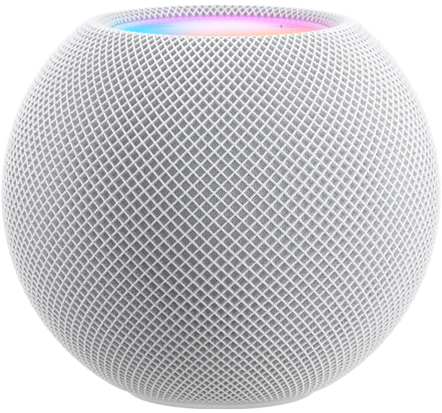
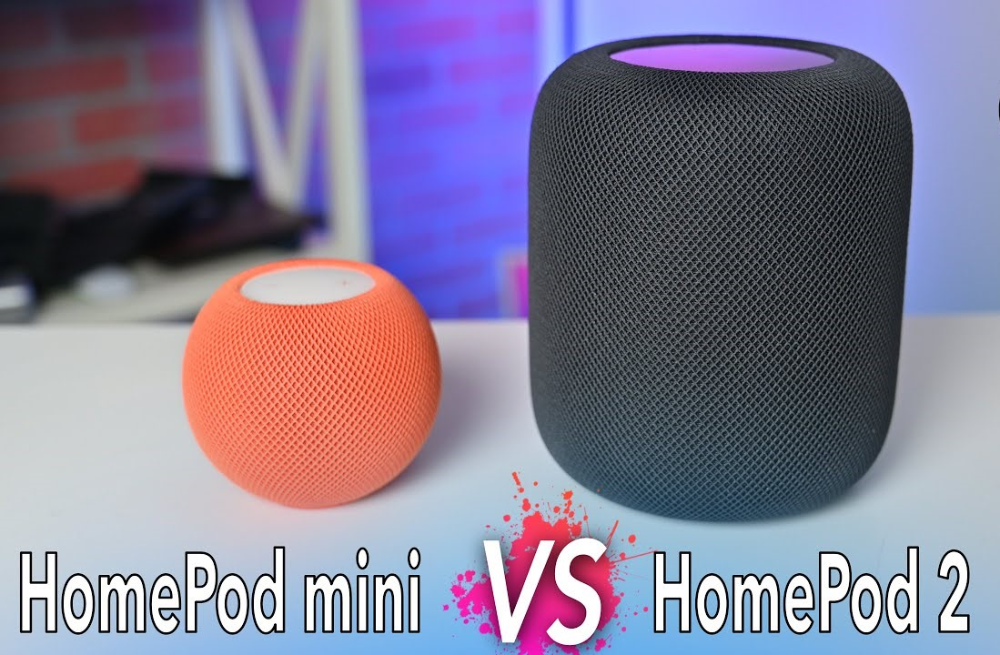
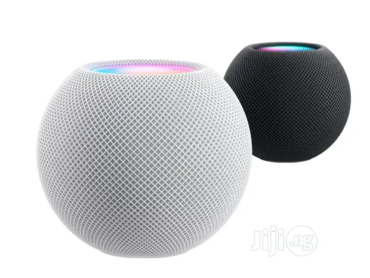
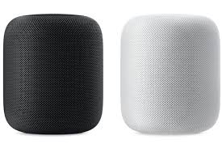

What is the the new
Apple Home pods?
The HomePod is a smart speaker developed by Apple Inc.
Designed to work with the Apple Music subscription service,
the HomePod incorporates beamforming and eight speakers and
is sold in two colors: white and space gray.
HOMEPOD MINI

If you're enjoying music or a podcast and have to head out,
you can continue to listen on your iPhone without missing a beat.
Hand it off simply by bringing your iPhone close to HomePod mini.
You'll experience the feeling of your iPhone and HomePod mini connecting
virtually as the sound transfers.3
Hand off music and podcasts between HomePod mini and iPhone
Personalized listening suggestions will also automatically appear on your
iPhone when you hold it next to HomePod mini. You'll have instant control at your
fingertips without having to unlock your iPhone.4
Intelligent assistant
Siri does everything like there's nothing to it.
Siri is your do-it-all intelligent assistant that puts HomePod mini at
the center of your family's activities. And with multiple HomePod mini speakers
around the house, it's easy to call on Siri from anywhere — with either a “Hey Siri” or
now just “Siri”. HomePod mini and Siri can do even more with your iPhone and AirPlay.
Simply start an AirPlay session from your iPhone, or ask HomePod mini to play audio
from apps on your iPhone using just your voice.5
Comes in variety of Colors
You've never heard color like this.
Room-filling sound.
An intelligent assistant.
Control your smart home.
Works seamlessly with iPhone.
Private and secure.
Five bold colors; $99 each.
Sound Nothing short of amazing.
HOMEPOD MINI vs HOMEPOD 2


HomePod mini:
$99 Buy
Surprising sound for its size
Full-range driver
Dual force-cancelling passive radiators
—
—
Stereo pair capable 2
Multiroom audio 1
Siri
Intelligent assistant
Voice recognition
Smart home hub 7
Sound Recognition 9
Temperature and humidity sensor 10
Private and secure

HomePod 2:
$299
Buy
Learn more Immersive, high-fidelity audio
High-excursion woofer
Five beamforming tweeter array
Spatial Audio 8
Room sensing
Stereo pair capable 2
Multiroom audio 1 Siri
Intelligent assistant
Voice recognition
Smart home hub 7
Sound Recognition 9
Temperature and humidity sensor 10
Private and secure
Apple Footer
Fast, free delivery
Or pick up available items at an Apple Store.